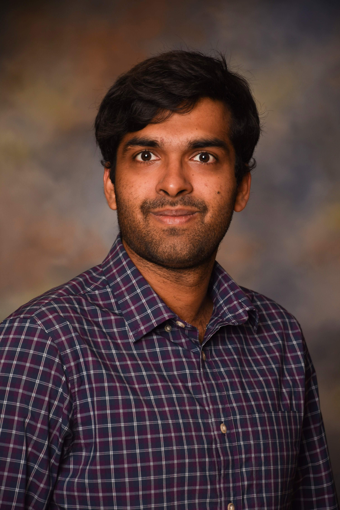

Phone: +1 6089605568
Email: sskausik08
at cs.wisc.edu
at cs.wisc.edu
Welcome
About Me:
I am Kausik Subramanian, a 2th year PhD student of the University of
Wisconsin-Madison in Computer Science, advised by Aditya Akella
and Loris D'Antoni, working on applying techniques of
formal methods and program verification and synthesis to networking.
Before, I completed four
life-changing years studying Computer Science at the
Indian Institute of Technology, Bombay.
Research Interests:
Networking, Programming Languages
A Day in the Life (or News):
- Nov 2016: Submitted a paper to PLDI'17. End to a hectic two months
- Nov 2016: Camera-ready version of Genesis sent to POPL'17.
- Oct 2016: Our artifact for Genesis was accepted by the POPL'17 AEC.
- Oct 2016: Genesis accepted to POPL 2017. First acceptance, phew! Paris, we will meet again.
- Sep 2016: Passed the PhD qualifying exams in networking.
- Aug 2016: Attended SIGCOMM in Florianopolis, Brazil. Attended many interesting talks and interacted with renowned researchers.